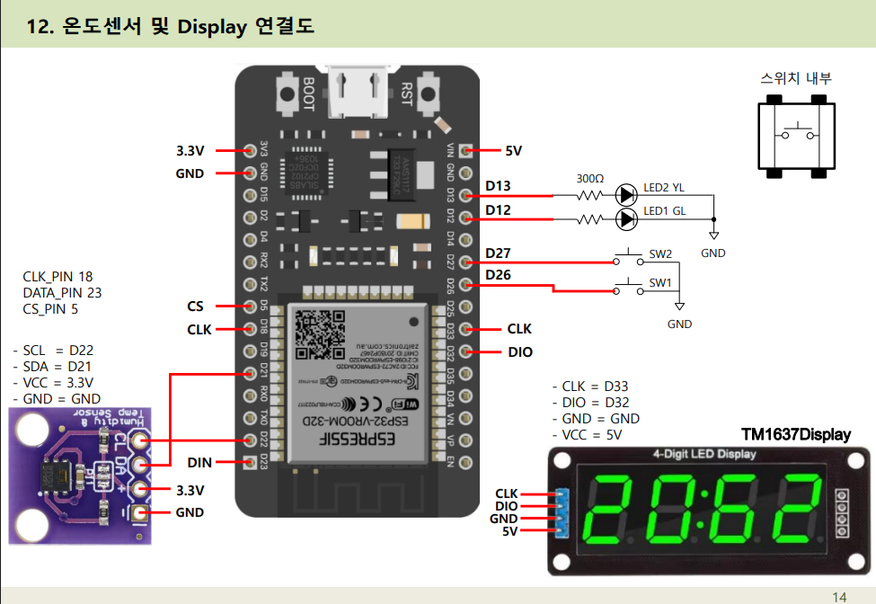
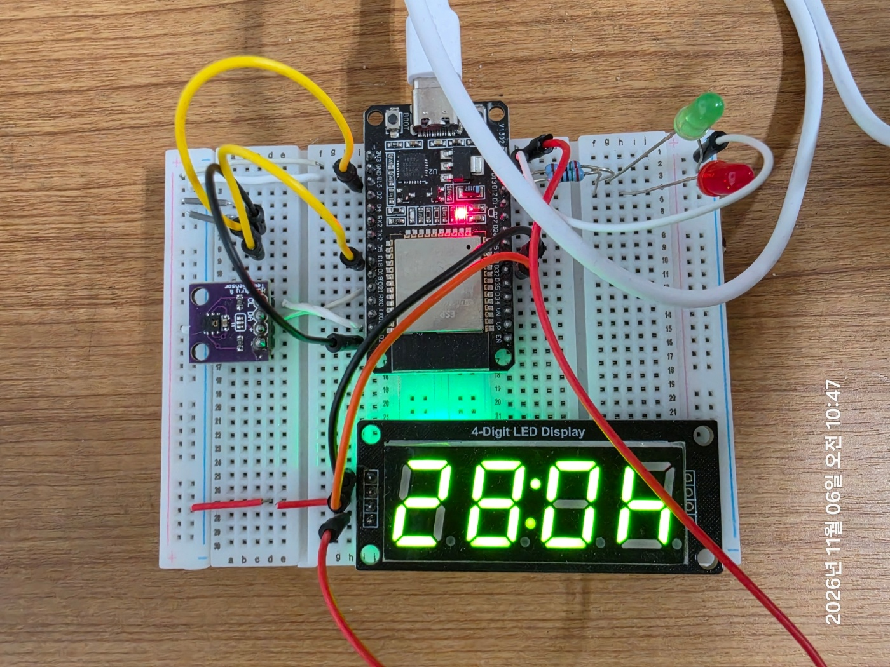
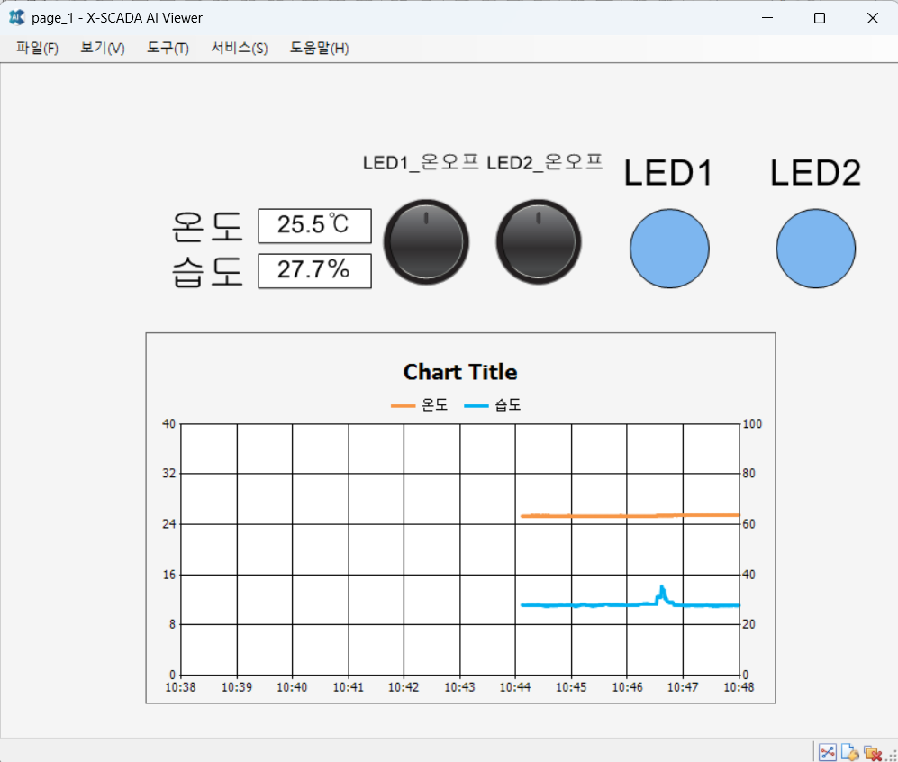
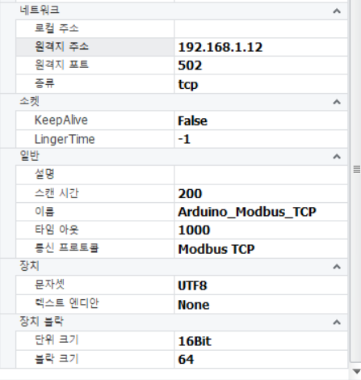
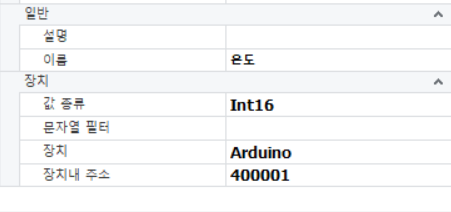
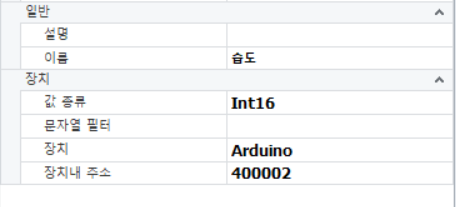

온습도 수집
HTU21D를 I2C로 연결하고 millis() 기반으로 1초마다 온도·습도를 갱신합니다.
HTU21D 센서의 온습도 데이터를 ESP32에서 수집하고, Modbus TCP를 통해 X-SCADA에서 모니터링하며 LED 출력 제어를 연동한 학습 프로젝트입니다.
ESP32에서 TM1637 디스플레이도 별도로 구동하여 시간·온도·습도를 순환 표시합니다.


| 구성 | ESP32 GPIO | 역할 |
|---|---|---|
| HTU21D | SDA 21 / SCL 22 | I2C 온습도 측정 |
| TM1637 | CLK 33 / DIO 32 | 4자리 표시장치 |
| LED1 / LED2 | 12 / 13 | 원격 출력 제어 |
| SW1 / SW2 | 14 / 27 | 입력 설정 (최종 결선 확인 필요) |
HTU21D를 I2C로 연결하고 millis() 기반으로 1초마다 온도·습도를 갱신합니다.
한국 표준시(UTC+9)를 사용하며, 최초 동기화 실패 시 2초 간격으로 재시도합니다.
시간 약 6초, 온도 약 2초, 습도 약 2초를 반복 표시합니다. NTP 미동기화 시 ----를 표시합니다.
if (millis() - lastSensorRead >= 1000) {
lastSensorRead = millis();
currentTemp = myTemp.readTemperature();
currentHum = myTemp.readHumidity();
}실제 코드의 핵심 동작을 발췌해 가독성을 위해 간략히 표현했습니다.
ESP32를 Modbus TCP 서버(TCP 502)로 구성했습니다. 온습도 측정값은 소수점 한 자리를 유지하도록 10배 정수로 변환하여 Holding Register에 저장합니다. X-SCADA의 Coil 제어 명령은 실제 LED GPIO 출력에 반영됩니다.
| 항목 | Modbus 내부 주소 | X-SCADA 주소 예시 | 처리 |
|---|---|---|---|
| 온도 | Holding Register 0 | 400001 | 온도 × 10 / Int16 |
| 습도 | Holding Register 1 | 400002 | 습도 × 10 / Int16 |
| LED1 | Coil 0 | 000001* | GPIO 12 ON/OFF |
| LED2 | Coil 1 | 000002* | GPIO 13 ON/OFF |
* Coil 주소는 일반적인 1-based 표기 예시이며 X-SCADA 드라이버 설정에 따라 다를 수 있습니다.
mb.task();
mb.Hreg(MB_HREG_TEMP, (uint16_t)((int16_t)(currentTemp * 10.0f)));
mb.Hreg(MB_HREG_HUM, (uint16_t)((int16_t)(currentHum * 10.0f)));
digitalWrite(LED1_PIN, mb.Coil(MB_COIL_LED1) ? HIGH : LOW);
digitalWrite(LED2_PIN, mb.Coil(MB_COIL_LED2) ? HIGH : LOW);



센서 측정, 현장 디스플레이 표시, Modbus TCP 데이터 제공, X-SCADA 모니터링 및 Coil 기반 LED 제어 기능을 모듈별로 분리하여 구성했습니다.
참고: 센서 통신 오류 처리, Wi-Fi 연결 끊김 시 재연결, Modbus 통신 장애 시 LED 안전 상태 전환은 제공된 코드에서 별도 구현이 확인되지 않아 완료 기능으로 기재하지 않았습니다.